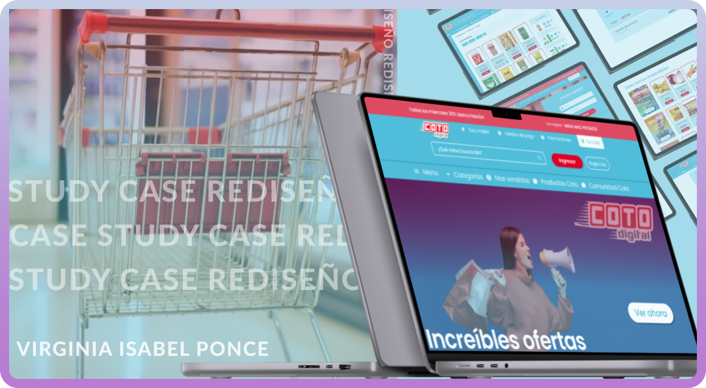
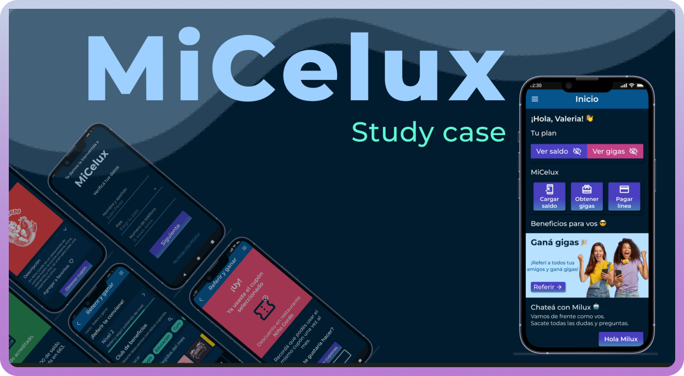
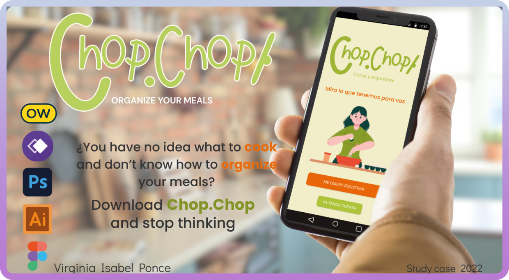

Rediseño Coto Digital
Coto Digital es la versión web de uno de los supermercados más grandes de Argentina. Los usuarios se llevan la experiencia del mercado a casa, ya que a través de esta plataforma pueden, realizar compras online, consultar ofertas y promociones.
UX Writing MiCelux
MiCelux es una compañía telefónica ficticia, la cual se compromete a brindar servicio de telefonía móvil 100% online, autogestionable y a precios bajos. MiCelux viene a responder una necesidad de aquellos usuarios que tienen una relación muy estrecha con la tecnología y necesitan un servicio de telefonía móvil de calidad y a precios accesibles.
Diseño UX/UI Chop.Chop
Chop.Chop es una app que se compromete a resolver la problemática de la alimentación y organización del día a día. A través de esta plataforma, los usuarios podrán ver imágenes para inspirarse, buscar recetas nuevas o probar ingredientes exóticos, y darle a las comidas del día a día un toque especial.